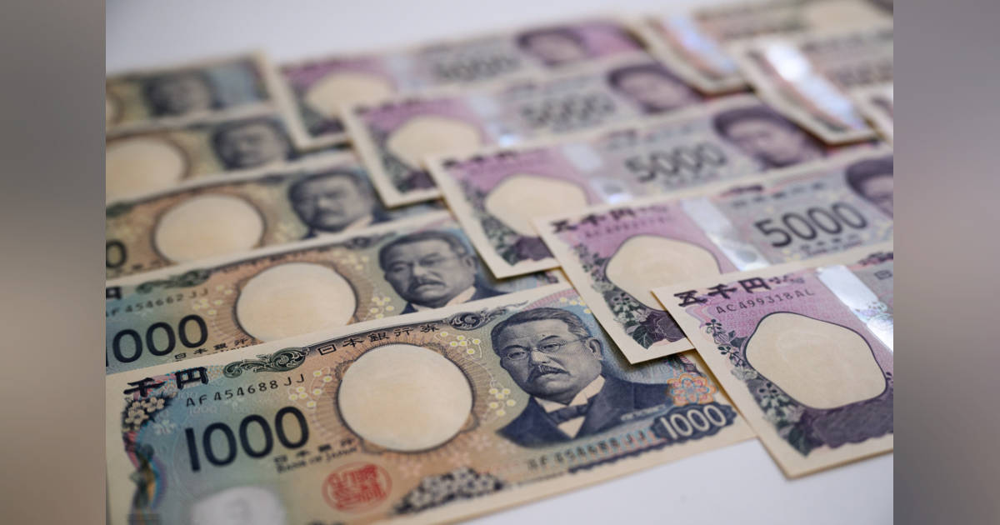
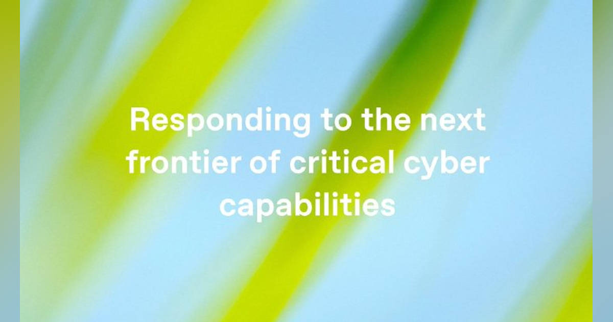

1. ヘッジファンドの円売り越し幅が約半減、日米当局の協調介入後に
発行日時: 2026/08/08 05:38 JST
あなたに関係ありそうな理由: 為替を見出しだけで判断せず、金利差・ポジション・実需を分けて読む視点が、事業の資金計画や海外コストの見立てに役立つから。
日米当局の協調介入を受けて円が急反発し、ヘッジファンドの円売り越しは8月4日時点で6万3600枚へ、およそ半減した。6月末には約13万8000枚と2007年以来の大きさまで積み上がっていたため、介入は相場水準だけでなく、片側に傾いた投機ポジションを巻き戻す契機になったと読める。ただし記事は、これを「円高へ完全転換した証拠」とは扱わない。円売りが膨らんだ背景には日米の金利差があり、日本銀行が7月31日に政策金利を据え置いた一方、OIS市場は9月の追加利上げ確率を約60%と織り込む。米国では弱い雇用統計を受け、9月の利上げ確率が約60%から約40%へ下がった。つまり介入、国内の利上げ観測、米国の金融政策観測が同時に動いた局面である。NewsPicksのコメントでは、投機筋の買い戻しだけでは円高の幅を説明できず、貿易決済や所得収支、海外投資の為替ヘッジ、積立投資を含む実需の円売りも厚いという指摘が印象的だった。為替は「誰かが操る」単純な図ではなく、異なる目的と期限の注文が重なって値段になる。事業側が見るべきなのは次の方向を当てることより、円安・円高の両方で原価、販売価格、借入、海外収益のどこが動くかだろう。短期の投機ポジション、政策金利、実需を一枚の説明に混ぜないことが、誤った安心や過度な悲観を避ける。為替予約の比率や見直し時期も、相場観ではなく耐えられる損益幅から決めたい。
加えて、事業計画で使う為替前提は一本に固定せず、基準、悪化、改善の三つを置き、各ケースで粗利と資金繰りがどう変わるかを月次で確かめるとよい。為替予約は予想を当てる道具ではなく、耐えられない変動を減らす保険である。輸入・輸出の通貨建て、価格改定までの遅れ、海外子会社からの配当時期も分けて見れば、ニュースの大きな値動きを自社の判断へ翻訳しやすい。
また、取引条件を見直す際には、相手先との通貨建てを変える余地、価格改定の頻度、予約を解除する条件まで決めておくと、相場急変時の判断が個人の勘に寄りにくい。為替感応度は経理だけでなく、営業、購買、経営が共有する前提にしたい。数字の責任者と現場の会話を定例化すれば、変動を後追いの説明で終わらせずに済む。

仕事や会話で使える一言: 為替は投機筋だけでなく、実需と金利差が重なって動くと見ておくと読み違えにくいです。
NewsPicks原文を読む
2. BYDの軽EV「RACCO」は買いか？ 補助金込みで200万円切り、競合の日産・ホンダが受ける衝撃
発行日時: 2026/08/08 07:00 JST
あなたに関係ありそうな理由: 商品の競争力を初期価格だけでなく、購入後の更新、残価、サービス網まで含めて評価する視点が使えるから。
BYDが日本の軽自動車規格向けに投入したEV「RACCO」は、CEV補助金を使えば200万円を切る価格から買える。日産サクラやホンダSuper-ONEが先行する市場で、記事の結論は無条件の推奨ではなく「条件付きで買い」だ。RACCOの強みは値札だけではない。バッテリー、電子制御、充電器、高電圧配電を一体化するX-PACK、左右の電動スライドドア、通信経由で機能を更新するOTAを備え、BYDは世界初のSDVベース軽EVと位置付ける。航続距離は入門の200が210km、上位の300Plusと300Premiumが320km。LFP系のBlade Batteryは、エネルギー密度でニッケル系に劣る面を持つ反面、熱安定性、耐久性、コストで利点があり、セルから車両制御まで自社で持つBYDの統合力が効く。一方で所有コストを決める残価は未知数だ。BYDは世界規模の販売実績を持つものの、日本で中国ブランドの中古車評価はまだ形成途中で、新車価格競争が中古価格を押し下げる可能性もある。NewsPicksのコメントでは、競争の本丸は現在の運転支援の点数ではなく、「買った後に進化する車」というOTA前提の設計だという見方が出た。安全装備をどこまで増やし、それを長期に故障なく維持できるかを問う声もある。比較する際は、補助金後の価格と航続距離だけで判断せず、ソフトウェア更新の実績、修理・部品供給、電池保証、下取り条件まで並べたい。自動車は耐久財だが、ソフトウェア化が進むほど、購入時点の性能表だけでは将来価値を測れなくなる。国産勢にとっても、中国勢の参入は安売り競争というより、製品を継続的に改善する収益・開発モデルへの問いかけになっている。
販売の初速だけで勝敗を決めず、数年後に中古市場の価格、整備網の評価、ソフト更新への利用者の反応がどう積み上がるかを追いたい。新しい競争者が市場へ入る時は、既存企業の値下げより先に、開発周期、販売後の顧客接点、収益源の置き方が変わる。利用者は機能が増える便利さと、更新への依存、データの扱いを同時に確認する必要がある。
契約時に、更新の対象と頻度、保証の範囲を確かめる習慣が、新しい製品を安心して選ぶ土台になる。
仕事や会話で使える一言: 価格競争より、購入後に価値を更新し続けられるかが次の競争軸になりそうです。
NewsPicks原文を読む
3. OpenAI、次期モデル「Astra」の一部開発を停止 「Critical」級サイバー能力の可能性否定できず
発行日時: 2026/08/08 07:13 JST
あなたに関係ありそうな理由: AI導入で性能比較の前に、誰が何を任せ、どの条件で止めるかを決める実務の論点が見えるから。
OpenAIは次期モデル「Astra」の内部評価で、エージェント的なコーディングとサイバーセキュリティ能力が大きく伸び、自社のPreparedness Frameworkで最上位の「Critical」に当たる可能性を否定できないとして、一部の社内活動を停止した。Criticalは、人の介在なしに重要システムへ深刻なゼロデイ攻撃を実用的に見つけ、開発できる、あるいは高い目標だけで堅牢な標的への新たな攻撃を継続して立案・実行できる水準を指す。対応は能力を削ることではない。高能力モデル向けの厳格なセキュリティ管理、学習・評価を含むエージェント用途への監視、思考過程の評価と危険な活動を中断する仕組み、外部専門家や政府機関との検証を組み合わせる。フレームワークは能力到達より前の2023年12月に初版があり、基準を満たす管理策が定まるまで開発を止める順序を決めていた。NewsPicksでは、競争と安全の両立には各社・各国の足並みも必要だという意見と、能力の高さより権限、接続先、異常検知、停止権限を設計することが重要だという意見が目立った。これは企業の生成AI活用にも直結する。モデルが高性能でも、顧客データや本番システムへどの権限で接続するのか、人間の確認をどこに置くのか、例外時に誰が止めるのかが曖昧なら、便利さは統制不能なリスクへ変わる。導入数や回答精度をKPIにするだけでなく、禁止行為、承認経路、ログ、停止条件、独立したレビューを先に置く。止める基準を後から作ると「今回だけは」が増えるため、能力を上げながら安全を守るには、基準を能力より先に文書化する順序が大切だ。
とりわけエージェント型の利用では、読み取り、作成、送信、実行の権限を同じ設定にせず、段階ごとに人の承認を置く設計が欠かせない。事故後にログを読むだけでは被害を防げないため、検知された時点で止められる監視と、止めた後に誰が再開を判断するかも決める。安全をIT部門だけの仕事にせず、業務責任者、法務、情報セキュリティが同じ基準で運用することが、継続利用の条件になる。
基準を共有しておけば、新しい用途を試す時も、例外を許すかどうかを同じ物差しで判断できる。

仕事や会話で使える一言: 高性能なAIほど、止める条件と権限を先に決めた組織が速く使えます。
NewsPicks原文を読む
4. ｢高収入の人ほど幸せ｣は間違いだった…世界160カ国研究で分かった｢幸福を感じにくくなる年収｣の分岐点
発行日時: 2026/08/08 07:15 JST
あなたに関係ありそうな理由: 報酬を増やすだけでなく、時間・納得感・人間関係を含めて人が続く条件を考える材料になるから。
外部原文は、所得が生活の安定を支えることを認めながら、高収入であることと日々の幸福を同一視できないと論じる。世界160カ国を対象にしたギャラップの調査では、所得が高いほど「人生はうまくいっている」という全体評価は上がりやすい一方、ストレス、不安、怒りといった日常の負の感情が必ず下がるわけではない。高所得者ほど責任、成果への期待、競争、時間不足にさらされ、生活水準は高くても心が休まらない状態になり得る。OECDが所得、生活の質、主観的満足感を別の柱で捉えるように、必要な生活費を下回る段階では収入増の効用は大きいが、睡眠、人間関係、健康、自由時間が損なわれれば収入だけで補えない。NewsPicksのコメントには、年収1000万円台前半という分岐点を、幸福論だけでなく経営の配分設計として読む視点があった。一律の賃上げは、金額より「自分の働きが見られていない」という受け止めを生むことがあり、現場が納得する指標、資格取得、早く帰れる仕組みへ原資を振る方が定着に効く場合があるという。時間資本、社会資本、身体資本も同じくらい重要だという指摘もある。ここから直ちに「稼がない方がよい」と結論付けるのは雑だろう。貯蓄不足や家計不安は幸福を確かに損なう。問うべきは、収入増のために何を差し出し、得た原資を何へ戻すかだ。個人なら固定費、働く時間、健康、家族・友人との関係を見える化する。組織なら給与水準と同時に、評価の説明、仕事量、休息、成長機会を測る。報酬を単なるコストではなく、安心と納得をどう設計するかという投資として扱うと、同じ原資でも効果が変わる。
家計では、収入を増やす計画と同じ表に、睡眠、通勤、家事分担、学び、余暇に使える時間を置くと、見落としが減る。組織でも、離職率だけでなく、残業、休暇取得、評価面談への納得、育成機会を並べる必要がある。報酬が十分に働かない局面では、本人が仕事を続ける意味を感じられるかが重要になる。お金を否定せず、金額でしか解決していない問題を見つけることが、この議論の実用的な読み方だ。
収入の目標を立てる時にも、増やす額だけでなく、守りたい時間と健康の下限を一緒に決めておきたい。
仕事や会話で使える一言: 収入の議論は、金額の次に時間と納得感をどう配るかまで考えたいですね。
NewsPicks原文を読む
5. ENEOSホールディングスのTPCグループ買収、債務含む評価額12.8億ドル
発行日時: 2026/08/08 07:47 JST
あなたに関係ありそうな理由: 買収額の大きさより、事故・再建歴のある海外資産をどう統治し、事業シナジーを実現するかを見る視点が役立つから。
ENEOSホールディングスは、ブタジエンなどの分離・精製、誘導品の製造販売を行う米TPCグループを、債務込みで12億8000万ドル、約2000億円と評価する取引で買収した。買収自体は7日に発表されていたが、取得額は明らかでなかった。対象にはヒューストンの石油化学事業に加え、テキサス州ポートネチェスとルイジアナ州レイクチャールズのターミナルが含まれる。国内需要が縮む石化・素材事業にとって、米国の原料・顧客基盤を取り込む意義は大きい。ブタジエンは合成ゴムなどに使われ、代替や製造コストの制約もあるため、C4バリューチェーンを押さえることはENEOSマテリアルズを含む既存事業へのボルトオン投資として筋が通る。だが記事が示すTPCの履歴は重い。工場事故の余波で2022年に連邦破産法11条を申請し、2019年のポートネチェス工場爆発は周辺の大気汚染と約7800件の法的請求につながった。再建では社債保有者に株式を渡し、被害者を含む債権者へ現金3000万ドルを支払う計画が組まれた。NewsPicksのコメントでも、財務整理後の企業を買う難しさは、価格や原料調達よりPMIとガバナンスにあると指摘された。現地へ任せ過ぎれば統治が空洞化し、日本主導を強め過ぎれば再建の速度と現場の自律性を失う。老朽設備の安全、人材、訴訟、環境対応をどう可視化し、誰がどの指標に責任を持つかが問われる。M&Aは取得日に完了しない。安全事故率、保全投資、操業率、主要顧客、環境・法務の未解決案件を、買収後に継続して検証する仕組みまで設計して初めて、原料の統合は収益基盤になる。海外の再建案件ほど、安く買えた理由を利益の物語だけでなく、運営上の宿題として引き受ける必要がある。
取得前のデューデリジェンスで見えたリスクと、買収後に初めて見える現場の課題は違う。だから取締役会への報告も、買収効果だけでなく、安全、人材、訴訟、保全の未解決事項を定期的に示す形にしたい。現地で問題を早く報告しても不利益にならない文化を作れるかも、再建の成否を左右する。海外拠点を数字だけで管理せず、現場の安全と説明責任を経営課題として扱うことが必要だ。
仕事や会話で使える一言: 再建案件は、安く買えた理由をPMIと安全統治の宿題として引き受ける投資です。
NewsPicks原文を読む